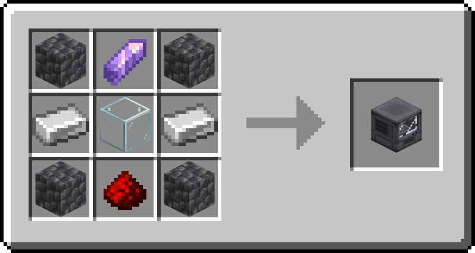
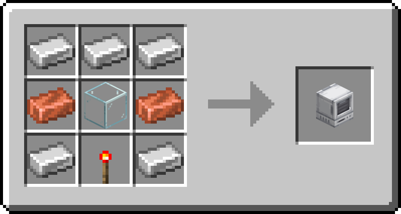

Item Analyser Machine¶
The Item Analyser is a machine that pulls a Pokémon through a small wormhole. It's built from two Cobblemon blocks. The mod renames Cobblemon's Fossil Analyzer to Item Analyser.
Building The Machine¶
- Place an Item Analyser (Cobblemon's Fossil Analyzer).
- Put a Data Monitor (Cobblemon's Monitor) directly on top of it.
- If you want to power it with lightning, put a Lightning Rod directly on top of the Data Monitor.
- Leave some open space behind the Data Monitor (the side opposite its screen). The Pokémon comes out about 5 blocks that way.
Both blocks use Cobblemon's own recipes.
Item Analyser (Fossil Analyzer):

Data Monitor:

The mod adds a way to repair a Damaged Data Monitor too. Put it in the middle of a crafting table with 8 Iron Ingots around it and you get a Data Monitor back.
Loading The Machine¶
The machine needs a summoning recipe loaded before it does anything. Right-click the Item Analyser with the items, one of each. To take the last one back out, right-click it with an empty hand.
There are two recipes:
- Any type gem and Blaze Powder - summons a Pokémon of the gem's type.
- A full Jar of Cosmic Energy and a Golden Apple - summons Cosmog at level 5, and you get an Empty Jar back. A jar that isn't full won't go in.
Server owners can turn the Cosmog recipe off with the Cosmog Summon setting.
Powering The Machine¶
The Data Monitor's screen stays off until it's charged. You can charge it with lightning or with an Electric move.
Lightning¶
When lightning hits the Lightning Rod on top of the Data Monitor, the machine starts straight away if a recipe is loaded. After the summon there's a 90% chance the Data Monitor burns out into a Damaged Data Monitor.
Electric Moves¶
- Load a recipe into the Item Analyser.
- Start a quick battle with the Data Monitor by holding the Target key while looking at it.
- Use an Electric move on it. The screen lights up in the loaded gem's type colour (yellow if there's no gem) and plays a sound.
- Right-click the Data Monitor's screen to use the charge and start the machine.
The charge stays until you use it, so you don't have to start the machine straight away.
Warning
The hit can break the Data Monitor. The chance is the move's power divided by 150, up to 90%. So Thunder Shock (40 power) breaks it about 27% of the time, and Thunderbolt (90 power) 60% of the time. Moves with no listed power count as 60. Any move that isn't Electric always breaks it.
Server owners can stop Data Monitors from breaking with the Data Monitor Griefing setting. You can learn more about the settings here.
What Comes Out¶
With a type gem and Blaze Powder there's a 95% chance of a regular Pokémon of the gem's type. It comes from the Pokémon behind the red, green, yellow and blue wormholes, all four together. If none of those has the gem's type, you get any of them. They're level 60. You can learn more about changing these Pokémon here.
The other 5% is an Ultra Beast of the gem's type at level 75. If no Ultra Beast has that type, you always get a regular Pokémon instead. Pokémon always come out at least average size.
Regular Pokémon have a 1% shiny chance, the same as a wormhole with no rings. That follows the Shiny Odds: No Rings setting, which is 1 in 100 by default. Legendaries, mythicals, Ultra Beasts and paradox Pokémon use Cobblemon's normal shiny rate, unless it's changed in the settings.
Cooldown And Other Rules¶
- After a summon the machine overheats for 5 minutes. Clicking the screen then shows "Error" and how long is left.
- Each summon has a 10% chance to add 1 energy to an Empty or Partially Filled Jar in your inventory.
- Your first summon gives the Magical Summoner advancement, and summoning Cosmog gives Sun & Moon.
- You can't break the machine's blocks while it's running.